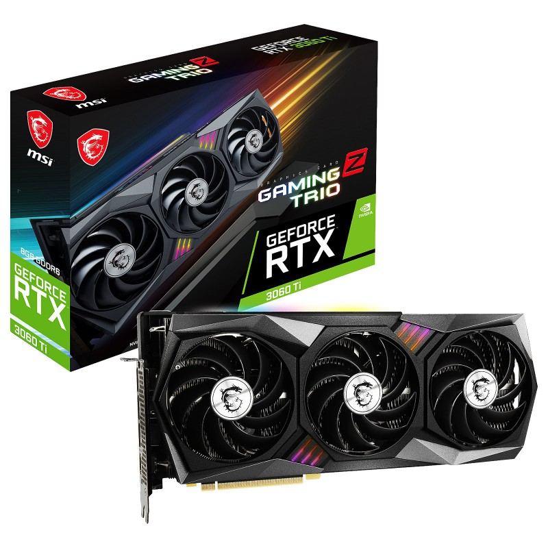
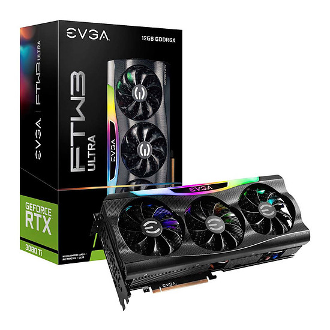

shop
Carte Graphique MSI GeForce RTX 3060 Ti GAMING Z TRIO 8G LHR

- 8Go GDDR6
- PCI Express Gen 4
- 2 x 8Pins
- HDMI/Tri DisplayPort
- Garantie 2 ans
comparatif des RTX 3060 Ti et RTX 3080 Ti
La GeForce RTX 3060 Ti, pour une offre plus segmentée
C’est dans ce contexte qu’apparaît, le 2 décembre 2020, la GeForce RTX 3060 Ti. Fidèle au découpage de sa génération Turing antérieure,
Nvidia tronçonne ainsi sa nouvelle famille Ampere en de multiples déclinaisons, pour une plus grande “granularité” de son positionnement tarifaire.
Mais aussi pour que les joueurs puissent choisir précisément les performances escomptées : le jeu 8K/4K de luxe avec la RTX 3090,
le grand confort en 4K avec la RTX 3080, le QHD sublimé avec la RTX 3070. Et aujourd’hui la Full HD en réglages Ultra et avec des effets ray-tracing, avec la RTX 3060 Ti.
EVGA GeForce RTX 3080 Ti FTW3 ULTRA GAMING

La carte graphique EVGA GeForce RTX 3080 Ti FTW3 ULTRA GAMING délivre des performances sans précédent pour vous permettre de jouer en 4K de façon fluide. Propulsée par Ampere, l'architecture NVIDIA RTX de seconde génération, vous profitez non seulement d'un gain de performances excellent par rapport à la génération précédente, mais également des technologies de ray tracing et DLSS optimisées pour une immersion encore plus grande !